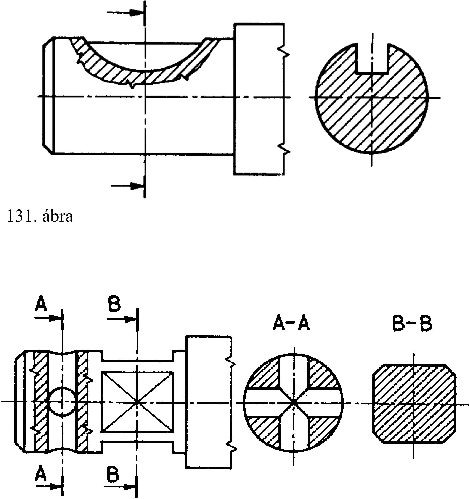

6. Metszeti ábrázolás b) a munkadarab tengelyvonalának meghosszabbításán (131. ábra), c) általános elhelyezésben, a rajz tetszőleges szabad helyén. Néhány szabály és mintarajz a szelvények képzésének rajzi kivitelére. Képezhetünk szelvényeket párhuzamos metszősíkokkal (132. ábra). Szelvényként lehetőleg összefüggő síkidomot rajzoljunk. Ha furat vagy horony miatt a szelvény részekre szakadna, úgy e részek összetartozását a metszősík mögött látható nézetvonalak megrajzolásával fejezzük ki (133. ábra). Képezhetünk szelvényt ferde kialakítású munkadarab tengelyvonalára vagy kontúrvonalára merőlegesen, és az így kapott szelvényt a rajzolás megkönnyítésére elfordíthatjuk (134. ábra). Az azonos alakú szelvényeket ugyanazzal a betűvel jelöljük, és az azonos alakú szelvényt csak egyszer rajzoljuk meg. A nem párhuzamos felületekkel határolt munkadarab szelvényeként csak a torzulásmentes szelvényrészeket rajzoljuk meg. 132. ábra I — I 133. ábra 37
